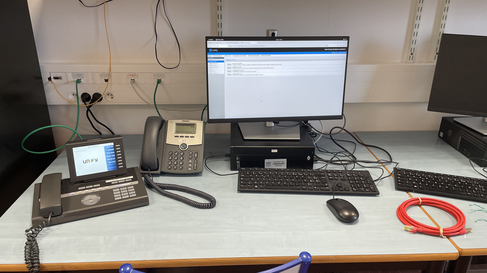

Travaux Pratiques Téléphonie
Contexte : Lors des travaux pratiques de téléphonie, en binôme et encadrés par un professeur.
Objectif : Dans le cadre de ma formation, ces travaux pratiques avaient pour objectif nous devions réaliser différentes taches afin d'approfondir nos connaissances théoriques ainsi que d'apprendre la configuration de téléphones et d'un serveur d'appel.
Travaux réalisés : J'ai dû configurer un serveur d'appel avec des comptes utilisateurs. Une fois cela fait j'ai dû configurer des téléphones IP afin que je puisse appelé chaque téléphone avec un autre. Suite à ça j'ai configurer un lien téléphonique vers l'extérieur pour pouvoir appeler et recevoir des appels de l'extérieur. Pour finir, j'ai du configurer un assistant téléphonique sur windows.
Résultats : J'ai pu monter en compétences dans les domaines de l'installation et de la configuration de systèmes téléphoniques
Note : 16.5/20

⬅ Retour